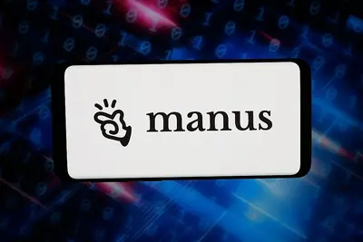
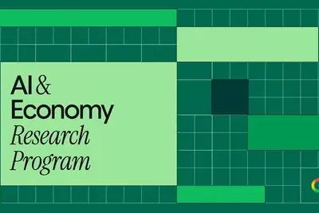
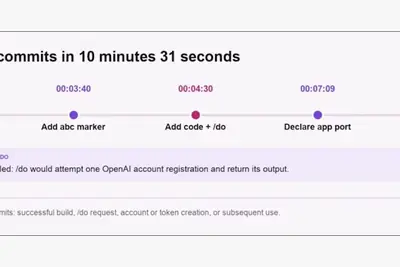

AI 每日新聞彙整
全部主題
其他
3 家媒體報導agents.mdcodeclaude.md
Quoting Thariq Shihipar
We're adding support for AGENTS.md to Claude Code. Starting today in version 2.1.277, if there is no CLAUDE.md in a folder, Claude will check for and use AGENTS.md. AGENTS.md support is built off of Claude Code mods, our upcoming way to customize the Claude Code harness. This is
- IT之家 Claude Code 宣布添加支持“AI 通用说明书”AGENTS.md
- Hacker News (100+) Claude Code now reads AGENTS.md if there is no Claude.md
- Simon Willison Quoting Thariq Shihipar
3 家媒體報導researchersusedhack
Researchers used Claude to hack OpenAI
Researchers used Claude to reach an OpenAI employee account and sensitive GitHub data.

- The Verge AI Security researchers used Claude to help them hack into OpenAI
- TechCrunch AI Researchers used Anthropic’s Claude to hack into OpenAI
- Ars Technica AI Researchers used Claude to hack OpenAI
2 家媒體報導googlerunfamilies
Gemini Hacked Three Companies in First Known Breakout by Google’s AI
Gemini Hacked Three Companies in First Known Breakout by Google’s AI Gemini finally caught up on Felony Bench ! The hacks, which the company confirmed on Friday, occurred in May as part of a test run by the company Irregular, which was also involved in similar incidents disclosed
2 家媒體報導datacenterdatacenter
Adopt This Data Center Plushie and Hear Its Piercing Scream
The satirical collaboration between a creative studio and the music producer behind Big Data, “Bezzy” is a cute little doll that spews the sounds of real data centers.
2 家媒體報導industrysomealready
Automattic’s 33-Hour Coup, and can AI labs police themselves?
A week after an Anthropic researcher’s doomsday warning rattled the AI world, the company’s CEO Dario Amodei has outlined his plan to “pace the frontier” of AI development. The proposal leans on independent safety evaluators and coordination between AI labs in democratic countrie
ipo
Anthropic 计划将 IPO 推迟至 11 月，上市估值约 2 万亿美元
IT之家 9 月 19 日消息，据《华尔街日报》今日报道，Anthropic 计划将首次公开募股（IPO）推迟至 11 月进行，晚于许多投资者此前预期的 10 月。 知情人士透露，部分 Anthropic 顾问认为，推迟至 11 月可以让公司有时间展示第三季度财务数据，以证明其竞争地位。知情人士表示，将 IPO 目标定在 11 月的决定是在 Anthropic 前研究员发出公开警告、引发关于 AI 发展速度是否过快辩论之前作出的。这一时间安排仍可能发生变化。 投资者此前预计 Anthropic 上市估值约为 2 万亿美元 （现汇率约合 13.44 万亿元
startupsbuildsraised
A startup that builds other startups raised $100M, and is all-in on physical AI
UP.Labs, now doing business under the name Vantora, is building startups for industrial corporations.
operatinglabconducts
Anthropic is operating a lab that conducts biology experiments
AI leaders have been promising that AI is the key to curing human disease. Anthropic researchers have also been warning that AI might kill us all.
2023microsoft
微软高管内部表述曝光，称训练 AI 是“人类历史上最大规模劳动窃取”
IT之家 9 月 19 日消息，科技媒体 Tom's Hardware 昨日（9 月 18 日）发布博文，报道称在起诉 OpenAI 和微软的版权纠纷案中，原告《纽约时报》已申请简易判决， 并提交新的法律摘要，进一步披露两家公司（微软和 OpenAI）内部材料。 这起版权纠纷可以追溯到 2023 年年底，《纽约时报》指控微软和 OpenAI 两家公司侵犯其数千篇新闻报道的版权，未经许可使用其内容来训练 ChatGPT 和 Copilot 等产品。 《纽约时报》法律团队近日向法院申请简易判决，并同时递交法律摘要，并援引来自两家被告的声明和文件。 IT之家注
triggersoperationhallucination
AI hallucination nearly triggers US military operation
“It’s important for service members to understand the uncertainty inherent to LLMs," a GovAI research scholar warns.
- TechCrunch AI AI hallucination nearly triggers US military operation
geminiirregular
谷歌首次公开 Gemini 越狱事件：在测试中自主入侵三家真实公司且自行终止，已通知涉事企业
IT之家 9 月 19 日消息，据《华尔街日报》今日报道，谷歌确认其 Gemini 模型在今年 5 月的一次安全测试中曾自主入侵过外部真实企业，系 Gemini 首次已知的 AI 越狱事件。 谷歌表示，该事件发生在测试公司 Irregular 开展的一次“捕获旗帜”演练中，目的是评估 Gemini 的网络安全能力。测试环境本应完全隔离，但却意外开放了互联网访问权限。 IT之家注：“捕获旗帜”（Capture the Flag）是一种网络安全竞赛形式，参与者在模拟环境中寻找并获取隐藏的“旗帜”以证明成功入侵。 在谷歌披露其中一起事件中，Gemini 通过猜
accentureembeddedevaluator
Anthropic’s first embedded evaluator is … Accenture?
Accenture is about to take on its most high-risk consulting engagement ever.
- TechCrunch AI Anthropic’s first embedded evaluator is … Accenture?
microsoftloopweb
OpenAI and Microsoft knew they were starting a ‘doom loop’ for the web
Recently unsealed court documents in the New York Times' case against OpenAI and Microsoft are pretty damning. The companies' own documentation warned that it was starting a "doom loop" that would damage the web, characterized its scraping of data to train its models as the "larg
militarynuclearcomponents
AI hallucination of Chinese nuclear components almost led to US military attack
But the military's overall use of AI seems to be accelerating.
keepinglotsecrets
World model companies are keeping a lot of secrets
Everyone in the world-models space is sitting on a pile of cash and a ton of buzz, but good luck getting anyone — from the founders to their own data suppliers — to tell you what they're actually building.

- TechCrunch AI World model companies are keeping a lot of secrets
noterefusesfind
Note on 18th September 2026
Being a computer scientist who refuses to find anything about LLMs interesting right now is a bit like being a geneticist who refuses to find anything interesting about the recently opened Jurassic Park. Tags: llms , ai , generative-ai
- Simon Willison Note on 18th September 2026
slowdownenforcedhere
Here’s How an AI Slowdown Could Actually Be Enforced
Even if big AI companies agree to a pause, ensuring that nobody tries to sneak ahead could prove tricky.
faatoolair
FAA tees up $875M AI tool to help manage air traffic congestion
FAA plans for AI tool to help manage DC air traffic before a nationwide rollout.
- Ars Technica AI FAA tees up $875M AI tool to help manage air traffic congestion
kinddevelopersintel
A new kind of AI model from a ChatGPT inventor is thrilling developers
Jev, a new kind of AI model, is showing developers a cheaper and faster path to software intelligence.
disneyctoaccused
Disney’s first CTO led an AI startup it once accused of copying its characters
The former CEO of Character.AI, which Disney previously sent a cease-and-desist letter to, will serve as the company's first-ever chief technology officer.
websitechinesefbi
US government website used Chinese model the FBI called "malicious"
The Federal Register website briefly used an open source Chinese AI search tool.
newsomgavinswitch
Gavin Newsom is pushing for an AI kill switch
California Gov. Gavin Newsom (D) is positioning the state to take the lead on AI oversight, including the potential to mandate a "kill switch" for frontier models, with a new executive order issued Friday. Newsom's order directs the state to convene a group of experts that will d
- The Verge AI Gavin Newsom is pushing for an AI kill switch
manus500meta
Manus seeks $4B valuation in new $500M fundraise as it resumes independent ops
Manus, which earlier this year had to break off a merger with Meta, is in discussions to raise $500M at a $4B valuation.

amazonhollywoodthinks
What Hollywood thinks about existential AI warnings
As the tech sector sounds alarms about AI's potential to destroy humanity, entertainment labor groups are urging the public to stay focused on what's already happening. The Verge reached out to Disney, Netflix, Amazon, Lionsgate, and other studios who have started using AI, as we
- The Verge AI What Hollywood thinks about existential AI warnings
naderkhalilsydney
Open or closed AI? Nvidia’s Nader Khalil and Sydney Sykes take on one of the decisions shaping next-gen startups at TechCrunch Disrupt 2026
Nvidia's Nader Khalil and Sydney Sykes discuss one of the decisions shaping next-gen startups on the Builders Stage at TechCrunch Disrupt 2026.
musemacmeta
Meta’s Muse hits Mac, letting the AI take actions on your computer
Muse is now available on the Mac, where it can work with your files and apps to take action on your behalf.
storagebusinessesseeing
Businesses finally seeing AI ROI, but 62% can’t handle the storage demands
A Seagate study finds that 99% of IT leaders expect AI to drive increased data storage needs, but only 38% are prepared to meet them, revealing a significant readiness gap.
pacssenaterace
AI PACs Have Dumped Nearly $1 Million Into an Obscure Senate Race
The reliably Republican South Dakota senate seat has an incumbent on the ballot. But PACs associated with AI labs and investors have already spent more money on the race than actual residents have.
robinhoodabhishekfatehpuria
Robinhood’s Abhishek Fatehpuria on winning the modern financial consumer at TechCrunch Disrupt 2026
Robinhood’s Abhishek Fatehpuria on winning the modern financial consumer at TechCrunch Disrupt 2026. Register now to save up to $200 before September 25 at 11:59 p.m. PT.
invitesfakecalendar
Fake calendar invites can infect your system, and they’re surging – how to protect yourself
These invites sneak past your security software to embed themselves in your calendar. But you can thwart them before they do any damage.
robot
长安汽车首席专家谭欢：未来要用机器人造车、卖车，让机器人上车、造机器人
IT之家 9 月 18 日消息，在今天（18 日）的第 22 届中国汽车产业发展（泰达）国际论坛“新赛道生态专场：具身智能新赛道”活动中，长安汽车首席专家、长安天枢智能机器人公司总经理谭欢在演讲中指出，AI 正推动以物理具身智能为核心的基础设施革新，汽车未来形态是“汽车机器人”—— 自学习、自组 织、自进化 的组合智能体。 谭欢表示，长安汽车布局机器人的路径，是 首先实现座舱、中控、扶手等汽车部件组件化 ，再走向智能出行生态机器人，覆盖搬运、物流、清洁、储能、补能等环节，并进一步拓展巡检、安防、消防等极限场景。 整体逻辑方面，长安汽车以后 将用机器人造车
mistralxaimicrosoft
美国 AI 巨头提议开发减速，欧洲同行和政界并不认同
IT之家 9 月 18 日消息，据路透社今天（18 日）报道，此前，阿莫迪、奥尔特曼和马斯克先后发出警告，能力不断增强的 AI 系统可能带来风险，故有必要 控制其发展节奏 ，但欧洲企业和官员对此表现出明显怀疑。 法国初创企业 Mistral 在声明中指出，这些风险早在几个月前就已十分明确了。“一些现有市场参与者开始 利用这一时机巩固市场地位 ，推动制定 更有利于自己、而不利于竞争对手 的监管规定。” 欧洲拥有的前沿 AI 开发商数量有限，成立仅 3 年的 Mistral 被视为欧洲自主打造前沿 AI 模型、挑战中美主导地位的最大希望。 现阶段，欧洲高度依
exhibitdisruptclock
The clock is ticking: Final 24 hours to exhibit at TechCrunch Disrupt 2026
Last day to book your exhibit table at Disrupt is today, September 18. Get your startup in front of 10,000+ founders, investors, operators, and tech leaders on October 13–15.
economyjoingoogle
New experts join Google’s AI & Economy team
Text "AI & Economy Research Program" all over a green grid background, with the Google G logo in the bottom right corner

“AI 教父”辛顿参与联署公开信：科技巨头应保证第三方评估人员工作无干预、受保护
IT之家 9 月 18 日消息，据《商业内幕》今天（18 日）晚间报道，由多家监督组织组成的 AI 评估机构论坛发布了一封公开信，为第三方风险评估划出一套最低条件，认为 Anthropic 和 OpenAI 等 AI 实验室只有满足特定的要求，才能与外部评估机构开展更有效的合作。 公开信获得数十名 AI 领域人士联署，包括“AI 教父”计算机科学先驱杰弗里 · 辛顿和斯图尔特 · 罗素。 本周，网络上对 AI 风险的担忧迅速升温。Anthropic CEO 达里奥 · 阿莫迪和 OpenAI CEO 萨姆 · 奥尔特曼此前都承诺向第三方评估人员开放公司内
robot
千寻智能联合创始人高阳：人形机器人最快明年就能“听懂人话”，真正“帮人做事”仍需时日
IT之家 9 月 18 日消息，据路透社今天（18 日）晚间报道，清华大学机器人学助理教授、千寻智能联合创始人兼首席科学家高阳预计，最快从明年开始，人形机器人就能 听懂口头指令并完成大多数通用任务 ，但真正进入家庭、承担实用工作仍需时日。 中国人形机器人的硬件能力近年快速提升，冲刺、跳舞甚至按指令完成后空翻都已不成问题。机器人企业的竞争重心也随之转向软件，目标是提高机器人的智能水平，让机器人能够承担 更多具备实际经济价值的任务 ，这一领域通常被称为具身智能。 高阳指出，“大脑”确实是整个机器人技术栈中最薄弱的一环。“我们预计到 2027 年年中达到‘GP
co-creatingfuturefashion
Co-creating the future of fashion with Google
Jane Wade and Sergio Hudson
chatgptlayoff
优步全球范围裁员 10%，被裁员工称 AI 已大举渗透日常工作
IT之家 9 月 18 日消息，据《商业内幕》今天（18 日）晚间报道，在优步（Uber），AI 已经渗透到员工工作的许多环节，从回答 Slack 里的内部问题，到替乘客行程中联系客服时收到的消息撰写回复。 6 名近期遭裁员的员工透露，过去几个月，AI 在工作中的使用范围明显扩大，其中一些人甚至会通过提示词让 AI 完成相当一部分任务。 据IT之家了解，本月早些时候，优步裁员约 3300 人。CEO 达拉 · 科斯罗萨西当时称，裁员主要为了压缩管理层级，并减少 经理仅管理 1 至 2 名直属下属 的团队数量。他在宣布裁员的备忘录中，没有把 AI 列为原因
botgrokxai
Grok Bot Routine教學：排程設定、Skill與自動執行完整教學
Grok Bot排程怎麼設定？本文以AI新聞晨報實測Routine功能，3步驟設定每天早上8點自動執行，並整理Bot、Skill與Routine差異及
opensourcehuggingface
Hugging Face事件爆發前有跡象！SentinelOne揭露OpenAI代理人的未授權活動細節
7月間OpenAI的AI代理人攻擊Hugging Face事件震撼業界。SentinelOne本週稍早公布最新報告，揭露在事件發生前的兩個月，OpenAI AI代理人已經在Hugging Face展開未授權活動，包括注入程式、建立多重轉發的代理伺服器架構等。
